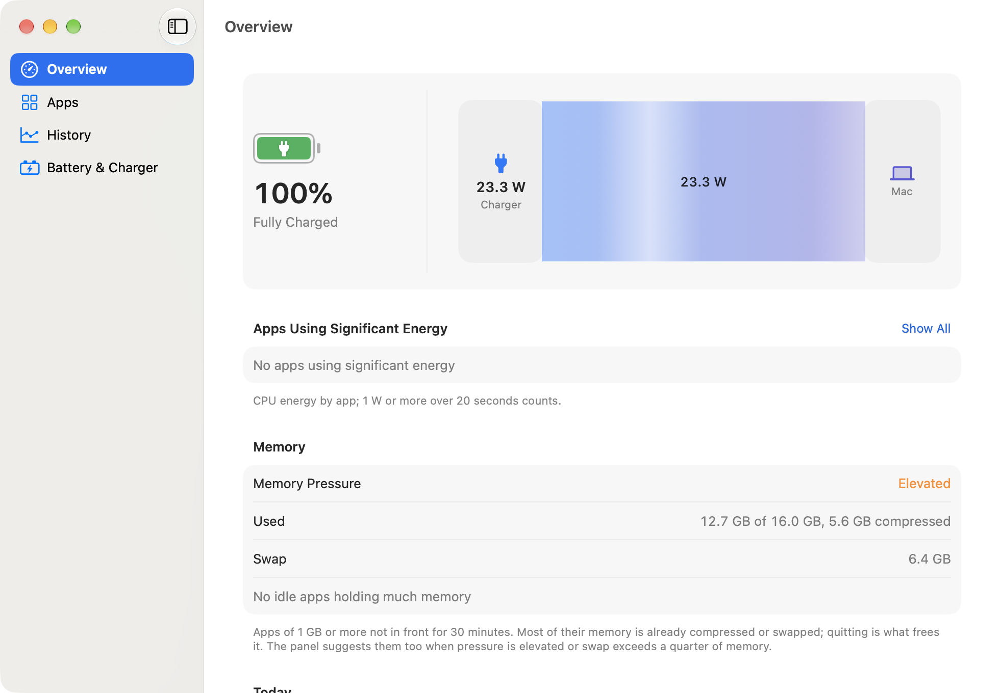
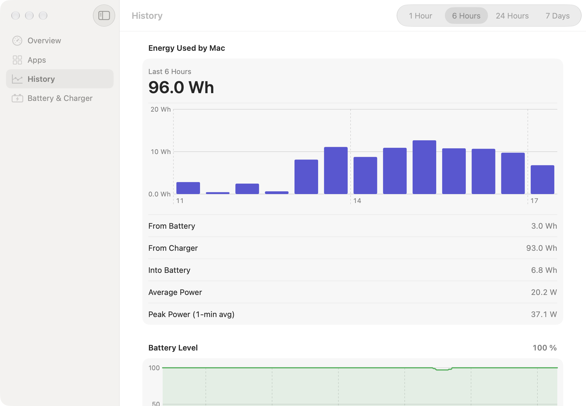

Open-source power and energy monitor for MacBook
Where your power goes.
Charger, battery and Mac, every 2 seconds, right in the menu bar.
Open-source power and energy monitor for MacBook
Charger, battery and Mac, every 2 seconds, right in the menu bar.

Rill is a free, open-source menu bar app for MacBook. It shows how many watts the charger delivers, how many the Mac uses, and how many go into or come out of the battery, live. It lists the apps using the most energy, watches memory pressure, and keeps 7 days of history. It reads only what macOS already reports, needs no special permissions, and goes online only when you check for updates.
No Activity Monitor. No guessing.
Charger input when plugged in, battery drain when not.
How power splits between charger, battery and Mac. Ribbon width is watts.
Energy, CPU and memory per app. Spots hung apps and quits them.
Pressure and swap at a glance. When memory runs short, it lists idle apps holding a lot.
Energy used each day, plus power, charge and battery temperature over time.
Health, cycle count, charger rating, negotiated voltage and supported USB-C PD levels.
From 1 hour to 7 days. Energy per period; hover to see each one.

One line in Terminal. The script checks the signature and puts Rill in Applications.
curl -fsSL https://raw.githubusercontent.com/chengffei/rill/main/install.sh | bashOr download the disk image and install it by hand:
Open the disk image and drag Rill into the Applications folder.
Double-click Rill. When macOS says it can’t verify the developer, click Done.
In System Settings › Privacy & Security, scroll down and click Open Anyway.
Requires macOS 26 or later on an Apple silicon Mac with a battery. If the icon doesn’t appear, a menu bar manager may have hidden it.
Common questions about installing and using Rill.
Install Rill. The menu bar shows live watts, and the panel splits them into charger input, battery charge or drain, and what the Mac itself uses, updated every 2 seconds.
No. It reads power sensors and battery data that macOS makes available to every app, and per-app energy from your own processes.
No. Rill only shows what is happening; it never changes how your Mac charges.
It doesn’t run a memory cleaner. When memory runs short, it shows which apps hold a lot of memory but haven’t been used for 30 minutes, so you can quit them. Quitting is what actually frees memory.
Yes. Rill is free and open source under the GPL-3.0.
Rill isn’t notarized by Apple. Install with the Terminal command to avoid the warning, or open the app once, dismiss the warning, then click Open Anyway in System Settings › Privacy & Security.
No. History stays on your Mac for 30 days. Rill goes online only when you choose Check for Updates.